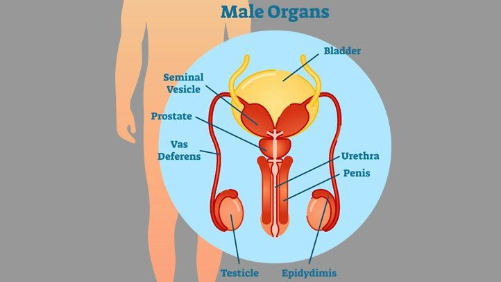
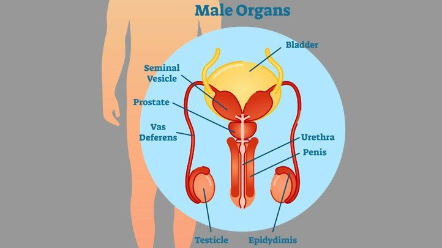

Reproductive Health Information
Precautions for Reproductive Health
Maintaining reproductive health is essential for overall well-being. Here are some precautions for both men and women:
- Practice safe sex to prevent sexually transmitted infections (STIs) and unwanted pregnancies.
- Use contraception consistently and correctly if not planning a pregnancy.
- Get regular screenings for STIs and cervical cancer (for women).
- Limit alcohol intake and avoid smoking, which can affect fertility and reproductive health.
- Maintain a healthy weight through balanced diet and regular exercise.
- Manage stress and seek support for mental health issues that may affect reproductive health.
- Discuss any concerns or changes in reproductive health with a healthcare provider.
Cures for Reproductive Health
Treatment options for reproductive health issues vary depending on the specific condition. Here are some common approaches:
- Medications: Certain medications may be prescribed to treat reproductive system infections, hormonal imbalances, or other conditions.
- Surgery: Surgical procedures may be necessary to address structural issues, such as fibroids, cysts, or blocked fallopian tubes.
- Fertility treatments: In cases of infertility, assisted reproductive technologies (ART) like in vitro fertilization (IVF) or intrauterine insemination (IUI) may be considered.
- Counseling: Counseling or therapy can help individuals and couples cope with reproductive health challenges, including infertility, pregnancy loss, or sexual dysfunction.
 
